Design YouTube
Upload karo, transcode karo, CDN se stream karo — aur bill $150k/day se kam rakho. YouTube design mein blob storage, DAG-based transcoding pipeline, pre-signed URLs aur CDN cost optimization ka pura kissa.
Introduction
YouTube dikhne mein simple hai — upload karo, dekho. Lekin andar ek huge pipeline hai. Notes mein diye 2020 ke stats scale ka idea dete hain:
- 2 billion monthly active users
- 5 billion videos roz dekhe jaate hain
- Mobile internet traffic ka 37% YouTube se
- 80 languages mein available
- 2019 mein $15.1 billion ad revenue
Hum ek chhota version design karenge jiski core features: fast uploads, smooth streaming, video quality change, low infrastructure cost, high availability aur reliability.
Step 1: Problem aur scope
| Item | Assumption |
|---|---|
| Features | Upload video, watch video |
| Clients | Mobile apps, web browsers, smart TV |
| DAU | 5 million |
| Avg video size | 300 MB; max upload 1 GB |
| Extra | Multiple resolutions, encryption, international users |
Estimation
- Maan lo 10% users roz ek video upload karte hain: 5M × 10% × 300 MB = 150 TB/day naya storage (notes ka number).
- CDN cost (Amazon CloudFront, ~$0.02/GB, US): har user roz 5 videos dekhe → 5M × 5 × 0.3 GB × $0.02 = $150,000/day.
Step 2: High-level design
Hum CDN aur blob storage khud nahi banayenge — cloud services leverage karenge (Netflix AWS use karta hai, Facebook Akamai CDN use karta tha — book ke examples). Interview mein "right technology choose karna" har cheez khud banane se zyada important hai.
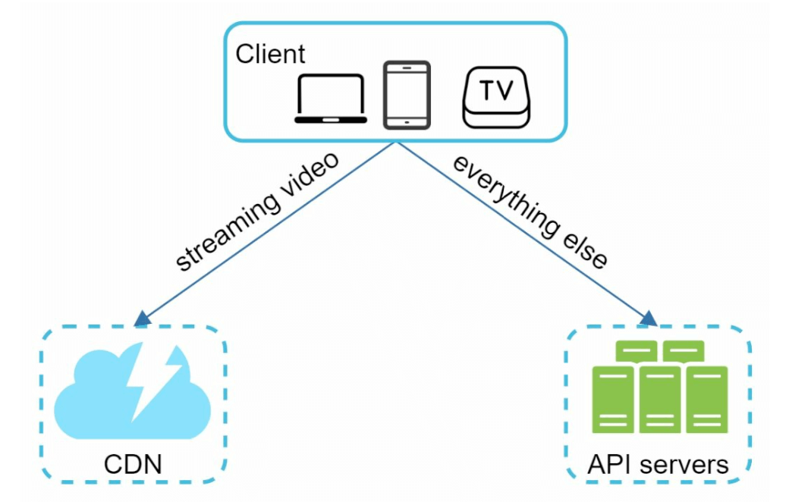
Video uploading flow
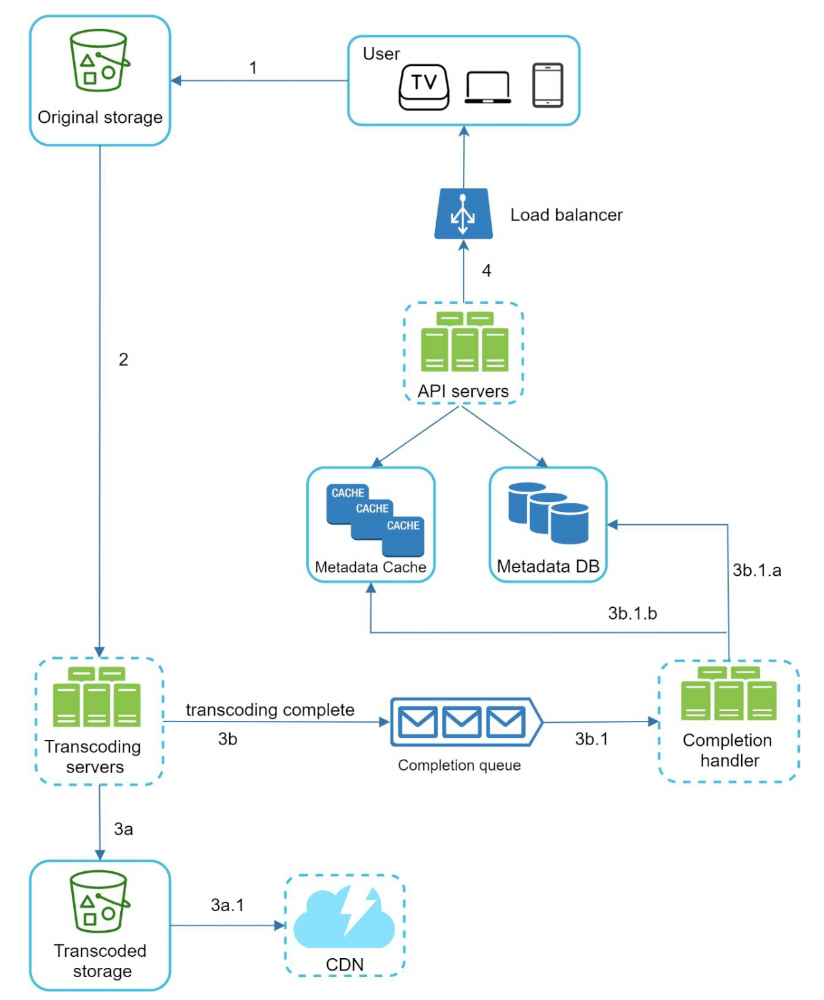
Components:
- User: phone, laptop, TV.
- Load balancer + API servers: streaming ke alawa sab requests.
- Metadata DB: title, description, size, URL… sharded + replicated (performance + availability).
- Metadata cache: fast metadata reads.
- Original storage: blob storage for raw uploads. (Blob = Binary Large Object.)
- Transcoding servers: video ko multiple formats/resolutions mein convert.
- Transcoded storage: transcoded files ka blob storage.
- CDN: videos cache + stream.
- Completion queue + handler: transcoding complete events → metadata update.
Metadata update (parallel)
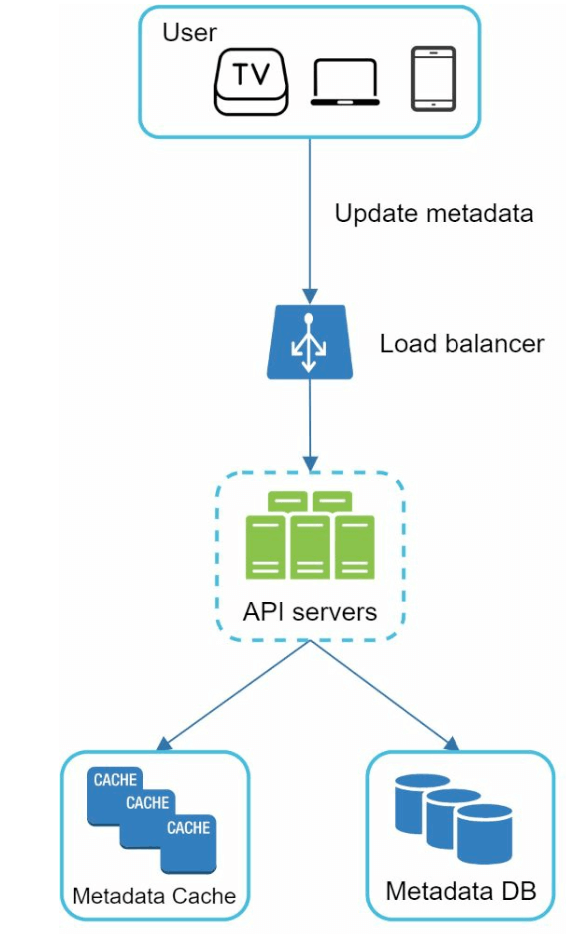
Upload aur metadata update parallel chalte hain — user ko 1 GB file khatam hone ka wait nahi karna padta title likhne ke liye.
Video streaming flow
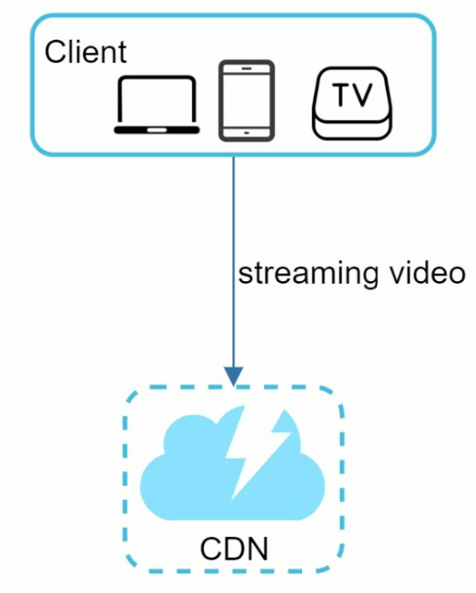
Streaming matlab poori file download kiye bina playback continuous chalta hai. Popular streaming protocols: MPEG-DASH, Apple HLS, Adobe HDS (aur Microsoft Smooth Streaming). Alag protocols alag encodings aur players support karte hain — isliye ek hi video ko multiple formats mein rakhna padta hai.
Step 3: Design deep dive
Video transcoding kyun zaroori hai?
- Storage: raw video bahut space leta hai — 60 fps pe 1 ghante ki HD video kuch sau GB ki ho sakti hai.
- Compatibility: devices/browsers sirf certain formats support karte hain.
- Network-adaptive quality: fast network pe high-res, slow pe low-res — smooth playback ke liye multiple bitrates.
- Mobile networks badalte rehte hain — automatic/manual quality switch.
Encoding format ke do parts:
- Container: basket jisme video, audio, metadata rehte hain — .mp4, .mov, .avi (extension se pata chalta hai).
- Codec: compression/decompression algorithm — H.264, VP9, HEVC.
DAG model
Transcoding computationally expensive aur time-consuming hai. Aur har creator ki needs alag: koi watermark chahta hai, koi apna thumbnail, koi high-def upload karta hai. Isliye abstraction chahiye jo client programmers ko tasks define karne de aur parallelism maximum ho — Directed Acyclic Graph (DAG). (Facebook ki streaming video engine bhi DAG programming model use karti hai — book ka reference.)
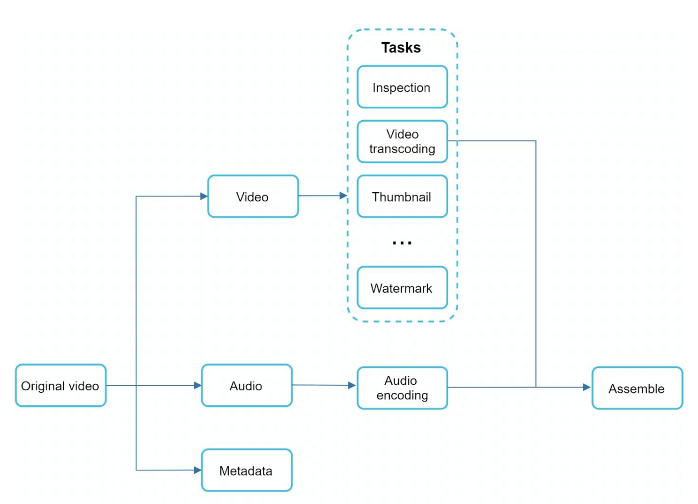
- Inspection: video achhi quality ka hai, malformed nahi.
- Video encodings: alag resolutions, codecs, bitrates.
- Thumbnail: user upload kare ya system auto-generate kare.
- Watermark: video ke upar identifying image overlay.
Video transcoding architecture
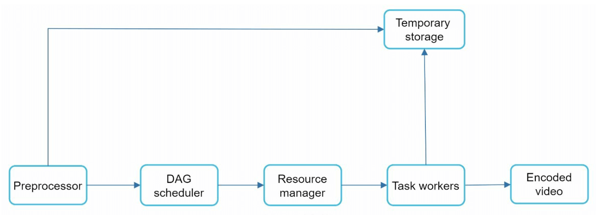
1. Preprocessor
- Video splitting: video stream ko GOP (Group of Pictures) alignment ke chhote chunks mein todna. GOP frames ka ek group hai jo ek specific order mein hai; har chunk independently playable unit hai, kuch seconds ka.
- Kuch purane mobile devices/browsers video splitting support nahi karte — unke liye preprocessor GOP split karta hai.
- DAG generation: client programmers ki likhi configuration files se DAG banata hai.
- Cache data: GOPs aur metadata ko temporary storage mein rakhta hai — encoding fail hui to retry yahin se.
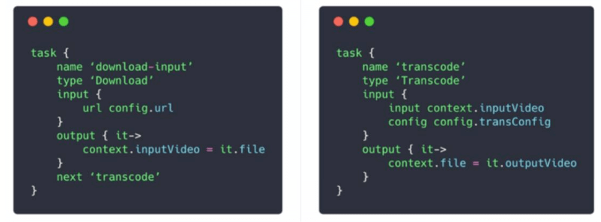
url config.url, output context.inputVideo = it.file, aur next 'transcode' — yani iske baad transcode task. Dusra task 'transcode', type 'Transcode', input context.inputVideo + config.transConfig, output context.file = it.outputVideo. "next" fields hi DAG ki edges banate hain, aur context ek task ka output agle ka input banata hai.2. DAG scheduler
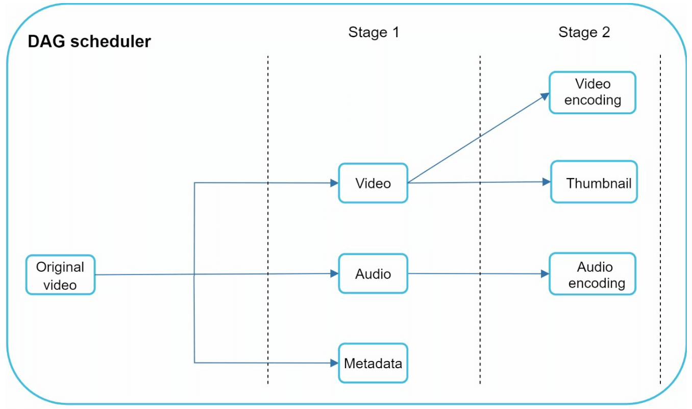
DAG ko stages of tasks mein todta hai aur unhe resource manager ki task queue mein daalta hai.
3. Resource manager
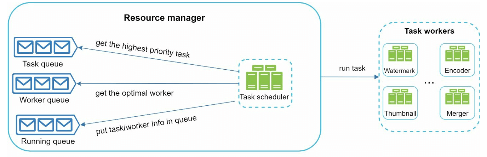
- Task queue: priority queue of tasks.
- Worker queue: priority queue of worker utilization info.
- Running queue: abhi chal rahe tasks aur unke workers.
- Task scheduler: optimal task + worker choose karke run karwata hai. Job khatam → running queue se hatao.
4. Task workers
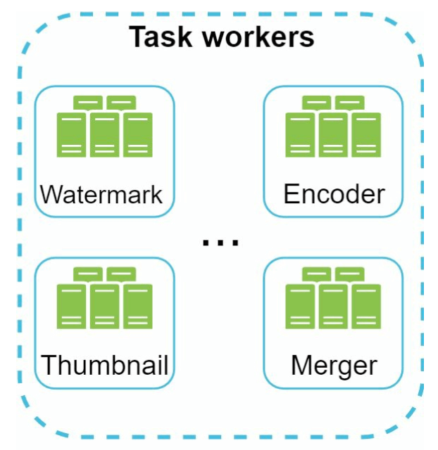
5. Temporary storage & 6. Encoded video
Temporary storage ka choice data type, size, access frequency, lifespan pe depend karta hai — metadata (chhota, frequently accessed) memory mein; video/audio blob storage mein. Processing complete hone pe temporary data free. Final output = encoded video, e.g. funny_720p.mp4.
System optimizations
Speed: parallel uploads
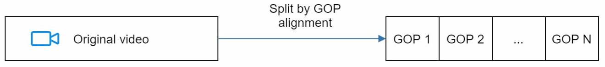
Client side pe hi GOP split karke parallel upload — fast + resumable (1 GB file 90% pe fail ho to sab dobara nahi).
Speed: upload centers close to users
Multiple upload centers globally (CDN ko upload centers ki tarah use karna) — US wale US center pe, Asia wale Asia center pe.
Speed: parallelism everywhere via message queues
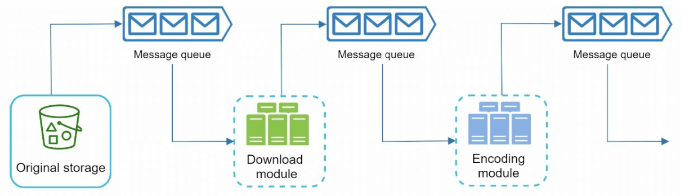
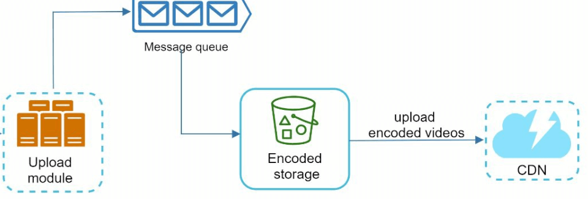
video.uploaded → video.downloaded → video.encoded) aur har module ek alag Spring Boot consumer group. AWS pe S3 event notifications → SQS → workers ek common pattern hai.Safety: pre-signed upload URL
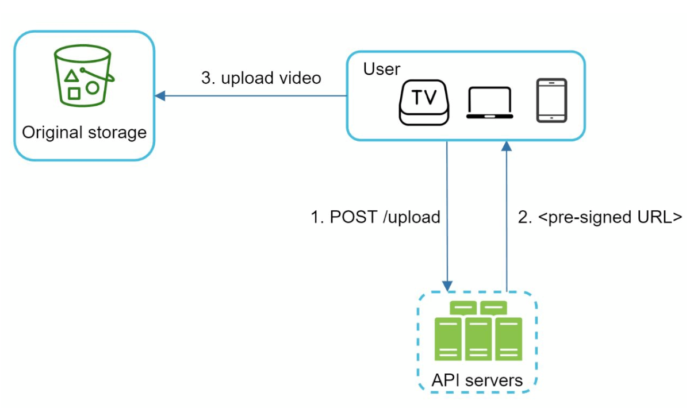
Pre-signed URL (Amazon S3 term; Azure mein "Shared Access Signature") sirf authorized users ko sahi location pe upload karne deta hai, limited time ke liye. Bonus: API servers bandwidth bachti hai.
Safety: video protection
- DRM: Apple FairPlay, Google Widevine, Microsoft PlayReady.
- AES encryption: encrypted video, playback pe sirf authorized users decrypt.
- Visual watermarking: logo/name overlay.
Cost-saving optimizations
YouTube streams long-tail distribution follow karti hain — kuch videos bahut popular, zyada tar ko kam views. Is insight se:
- Sirf popular videos CDN se; baaki high-capacity storage video servers se.
- Kam popular content ke liye kam encoded versions; short videos on-demand encode.
- Kuch videos sirf certain regions mein popular — dusre regions ke CDN pe mat daalo.
- Apna CDN banao aur ISPs ke saath partner karo (Comcast, AT&T, Verizon jaise) — bandwidth cost kam, users ke kareeb.
Error handling
| Error | Handling |
|---|---|
| Upload error | Retry (chunk-level) |
| Split video error | Purane clients GOP split nahi kar sakte → poora video server pe bhejo, server-side split |
| Transcoding error | Retry |
| Preprocessor error | DAG regenerate |
| DAG scheduler error | Task reschedule |
| Resource manager queue down | Replica use karo |
| Task worker down | Naye worker pe retry |
| API server down | Stateless hai — dusre server pe redirect |
| Metadata cache down | Data replicated hai, dusre node se lo; nayi node lagao |
| Metadata DB master down | Slave ko promote; slave down → dusra slave + replacement |
| Malformed video format | Non-recoverable — task roko, client ko error code |
Step 4: Wrap-up
- API tier scale: stateless, horizontal.
- DB scale: replication + sharding.
- Live streaming: zyada strict latency, kam parallelism (real-time), alag error handling.
- Video takedown: copyright, illegal content — upload ke time ya user flag pe.
Interview mein kaise bolein
- (5 min) Scope: upload + watch, 5M DAU, 300 MB avg, 150 TB/day, $150k/day CDN cost.
- (10 min) High level: CDN for streaming, API servers for everything else; upload flow (original storage → transcoding → transcoded storage → CDN + completion queue → metadata); streaming protocols.
- (15 min) Transcoding deep dive: kyun, container vs codec, DAG, preprocessor (GOP), DAG scheduler stages, resource manager queues, task workers, temp storage.
- (10 min) Optimizations: parallel/resumable upload, regional upload centers, message queues, pre-signed URLs, DRM/AES/watermark, cost (long-tail).
- (5 min) Error handling table + live streaming difference.
Common follow-up questions
Q: User 1 GB upload kar raha hai, network beech mein gaya?
A: GOP/chunk-based resumable upload — sirf fail hue chunks retry.
Q: Transcoding mein kitna time lagega, user ko kab dikhega?
A: Async — completion queue event pe metadata update aur user notify. Low resolution pehle ready karke publish, high-res baad mein — common pattern.
Q: CDN cost kaise kam karoge?
A: Long-tail: popular → CDN, unpopular → origin video servers, regional distribution, on-demand encoding, ISP partnerships/own CDN.
Q: View count kaise maintain karein?
A: Har view pe DB write nahi — events stream (Kafka) mein, aggregate karke periodic update (Chapter 21 ad-click aggregation jaisa).
Q: Same video do baar upload hua?
A: Content hash/fingerprint se dedup ya copyright detection — upload pipeline mein inspection stage.
Q: Live streaming mein kya alag?
A: Latency strict, chunks chhote, transcoding real-time, error recovery ke liye time kam.
Key Takeaways
- Estimation: 150 TB/day storage, ~$150k/day CDN — cost design ko drive karta hai.
- Streaming = CDN; baaki sab = API servers. Upload = pre-signed URL se blob storage.
- Upload flow: original storage → transcoding → (transcoded storage → CDN) ∥ (completion queue → metadata DB/cache).
- Transcoding = DAG (inspection, encoding, thumbnail, watermark, assemble); architecture = preprocessor → DAG scheduler → resource manager → task workers, temp storage for retries.
- GOP chunking = parallel + resumable + fault-isolated.
- Message queues se modules decouple; DRM/AES/watermark se protection.
- Long-tail insight se cost bachao: popular videos CDN, baaki origin; regional + ISP partnerships.